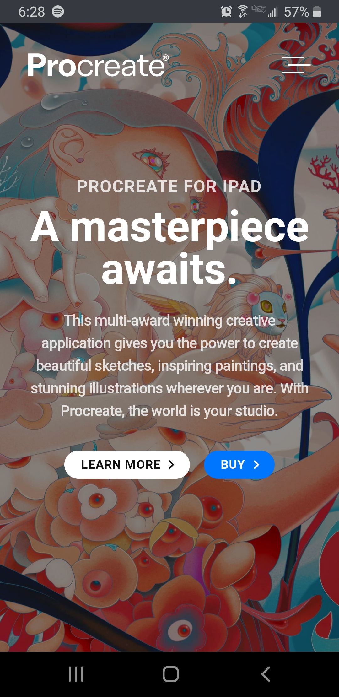
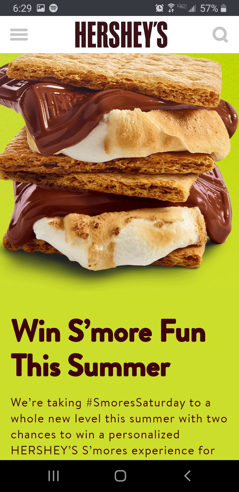
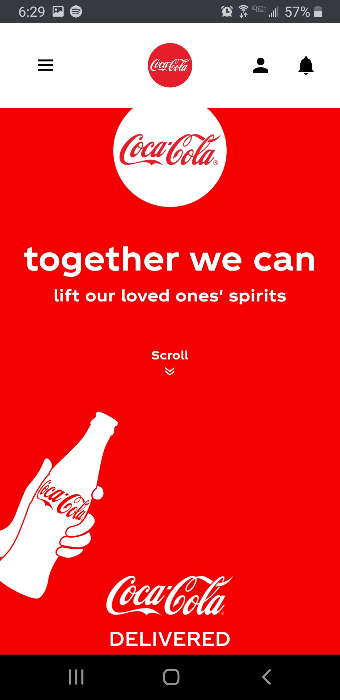

Contrast
Procreate is an app for artists that I use and love. Their site looks clean, bright, and shows contrast wonderfully through color. Their vibrant color choices help the page to pop with sleek complimentary colors. They also have great use of light and dark, as shown by all three sections on this page, the first white text on color, the second black text on a bright color, and the third a pop of colors from the pictures on the white background.
Repetition
I enjoyed looking at the Hershey's website because not only the consistent warm color pallets but also the fonts. I struggled to find one for repetition, but I think it could be argued that by using the types of fonts and colors that they did they kept to a repetitive style. Using warm colors, the same chunky friendly fonts, and the same layout for each block, they kept to a similar design that used repetition.
Alignment
The Coca-Cola website actually uses very interesting alignment! As you scroll, everything is responsive and center aligned. It keeps everything in the middle. I struggled to find good examples of what I wanted, so I hope that these are good. I also liked how everything was clustered, so relevant information was bundled in the center.